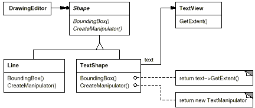
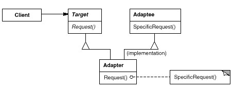
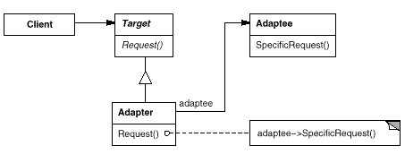
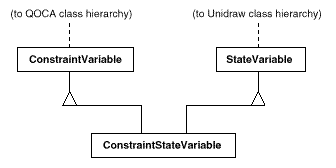
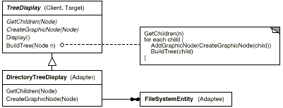
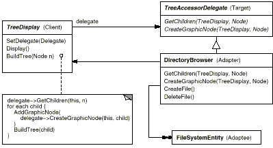
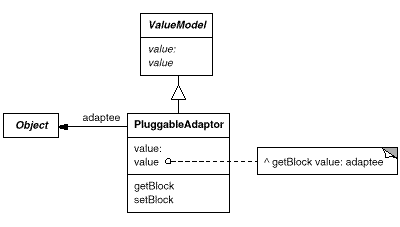

directoryDisplay :=
(TreeDisplay on: treeRoot)
getChildrenBlock:
[:node | node getSubdirectories]
createGraphicNodeBlock:
[:node | node createGraphicNode].
もし、インタフェースの適合機能をクラスの中に作り込むのであれば、このアプローチはサブクラス化の代わりになる便利な方法である。

class Shape {
public:
Shape();
virtual void BoundingBox(
Point& bottomLeft, Point& topRight
) const;
virtual Manipulator* CreateManipulator() const;
};
class TextView {
public:
TextView();
void GetOrigin(Coord& x, Coord& y) const;
void GetExtent(Coord& width, Coord& height) const;
virtual bool IsEmpty() const;
};
Shape クラスは対角の点で定義される境界線を持っている。それに対し TextView クラスは、原点、高さ、幅で定義されている。また Shape クラスでは、Manipulator オブジェクトを生成するための CreateManipulator オペレーションが宣言されている。この Manipulator オブジェクトには、ユーザが Shape オブジェクトをオペレーションするときにこの Shape オブジェクトをどう動作させるかが記述されている。TextView クラスには、これと等価なオペレーションは定義されていない。TextShape クラスは、これらの異なるインタフェース間の adapter となる。
BoundingBox オペレーションは、TextView クラスのインタフェースを Shape クラスのインタフェースに従うように変換する。
IsEmpty オペレーションは、TextView クラスの同名のオペレーションを呼ぶ（これは、adapter のオペレーションの実装では共通に行われることである）。
最後に、CreateManipulator オペレーション（ TextView クラスではサポートされていない）を初めから定義する。このアプローチでは、TextShape オブジェクトのオペレーションをサポートする TextManipulator クラスがすでに実装されていると仮定する。
オブジェクトを基にした adapter は、異なるインタフェースを持つクラスを組み合わせるために、合成オブジェクトを使用する。このアプローチでは、adapter である TextShape オブジェクトが TextView オブジェクトへのポインタを保持する。
TextShape クラスは、TextView クラスのインスタンスへのポインタを初期化しなければならないが、それはコンストラクタで行う。また TextShape クラスは、自身のオペレーションが呼ばれたときは、TextView オブジェクトの対応するオペレーションを呼び出さなければならない。この例では、クライアントが TextView オブジェクトを生成し、それを TextShape のコンストラクタへ渡すと仮定する。
CreateManipulator オペレーションは、一から実装され、既存の TextView クラスの機能を再利用しないので、クラスを基にした adapter のものと変わらない。
このコードを、クラスを基にした adapter のコードと比較してみよう。オブジェクトを基にした adapter の方が、コードの作成では若干の労力が必要になるが、より柔軟なものになっている。たとえば、オブジェクトを基にした adapter としての TextShape クラスは、TextView クラスだけでなく TextView のサブクラスともうまく働く。これにより、クライアントは単に TextView のサブクラスのインスタンスを TextShape クラスのコンストラクタへ渡すだけでよい。
クラスを基にした adapter では、インタフェースを適合させるために多重継承を用いる。このパターンの特徴は、一方の継承をインタフェースを継承するために用い、他方の継承を実装を継承するために用いることである。C++では、インタフェースを公開で継承し、実装を私的に継承することで区別するのが普通である。ここでは、adapter となる TextShape クラスを定義するためにこの方法を用いる。
class TextShape : public Shape, private TextView {
public:
TextShape();
virtual void BoundingBox(
Point& bottomLeft, Point& topRight
) const;
virtual bool IsEmpty() const;
virtual Manipulator* CreateManipulator() const;
};
void TextShape::BoundingBox (
Point& bottomLeft, Point& topRight
) const {
Coord bottom, left, width, height;
GetOrigin(bottom, left);
GetExtent(width, height);
bottomLeft = Point(bottom, left);
topRight = Point(bottom + height, left + width);
}
bool TextShape::IsEmpty () const {
return TextView::IsEmpty();
}
Manipulator* TextShape::CreateManipulator () const {
return new TextManipulator(this);
}
class TextShape : public Shape {
public:
TextShape(TextView*);
virtual void BoundingBox(
Point& bottomLeft, Point& topRight
) const;
virtual bool IsEmpty() const;
virtual Manipulator* CreateManipulator() const;
private:
TextView* _text;
};
TextShape::TextShape (TextView* t) {
_text = t;
}
void TextShape::BoundingBox (
Point& bottomLeft, Point& topRight
) const {
Coord bottom, left, width, height;
_text->GetOrigin(bottom, left);
_text->GetExtent(width, height);
bottomLeft = Point(bottom, left);
topRight = Point(bottom + height, left + width);
}
bool TextShape::IsEmpty () const {
return _text->IsEmpty();
}
Manipulator* TextShape::CreateManipulator () const {
return new TextManipulator(this);
}

